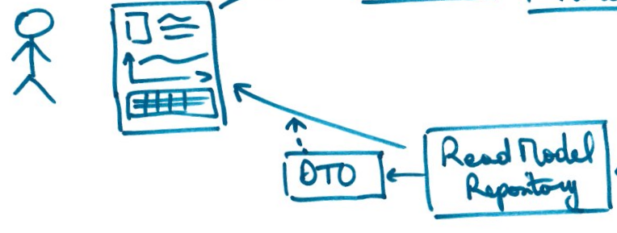
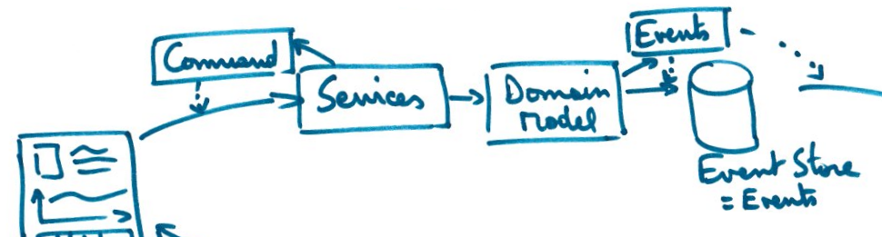
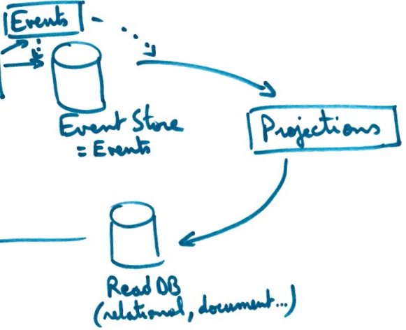
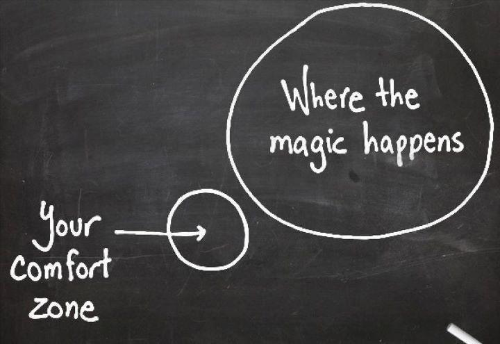

Emergent Design & Simplicity
With an introduction to DDD, CQRS and EventSourcing
Agile Tour Bordeaux - October 28th, 2016
Clément Bouillier - Devcrafting - @clem_bouillier
Disclaimer
There is no silver bullets
That's not a judgement of what you do, just an option
Your "confort zone" will be heckled
We will discover some "hype" patterns like CQRS, DDD, EventSourcing...that's the how, but we will start with why
Quick survey...
Do you have a design phase before development?
- Yes, it takes up to 20% (or even more) of dev effort!
- Yes, just to sketch some ideas and make some choices
- No, let's design emerge
Do you use a full stack framework upfront?
- Yes, it is the backbone of my architecture
- Yes, but just as an entry point
- No, prefer simple solution first
Why would you use a framework?
- It makes simple lots of generic and powerful features
- It gives me a starting point and some guidance
- Avoid it, prefer libraries (if needed!)
When do you choose which tool you will use to store data?
- It is already chosen before project starts (standard & norms!)
- As soon as possible (design phase...), my database model is important
- Later, it is an implementation detail, will potentially choose several data stores
When do you decide which infrastructure you will use?
- It is already chosen before project starts (standard & norms!)
- You forecast usage of your applications with formulas
- Will see, make your application horizontally scalable
Do you develop with TDD (test first!) practice every day?
- No, it's a waste of time!
- More or less, I try to test some classes
- Yes, all of my new code is created writing a test before
Results:)
- Majority of 1: you are very far from emergent design, let's discover
- Majority of 2: you are on the way!
- Majority of 3: you are ready for emergent design
Emergent design
Why? Avoid early choices
Early choices are predictions, but we are really bad at predictions!
Keep options to decide later
How?
Avoid too much dependencies
Your code will be simpler: KISS! (Keep It Simple Stupid)
Avoid lots of generic components
You will perhaps not use them: YAGNI! (You Aren't Gonna Need It)
Avoid components requiring lots of configuration
You can probably do the same with few lines of code
Make small components with few dependencies
Basically what we call hexagonal (or also clean, onion...) architecture
Or also micro-services architecture (buzz word these days!)...
Prefer simple basic code
OVER
lots of bricks composed through huge configuration
That's what we call "simplicity"
Emergent design & simplicity leverage each other
When? At the "last responsible moment"!
Ie. when you really need to take a decision
For demo, you can afford some temporary solutions for example...
Note: there are some controversial discussions on its meaning: Alistair Cockburn (fr)
An example of simplicity with emergent design
Context
You know twitter? Let's try to implement some sort of Twitter app...
- Registered users publish messages
- Users follow other users
- Users receive followers messages on their timeline
Great! Like for any other application (silver bullet?!):
- Choose your preferred database engine and frameworks
- Start to design my static model (UML classes, Merise entities, DB tables...)
- Generate SQL database structure
- Embed all of this in XXX framework...
That is NOT simplicity! This is ACCIDENTAL COMPLEXITY!
For example, why would you systematically do CRUD in first place?
Probably, users do not need CRUD!
Focus on ESSENTIAL complexity: start with features/user stories
Describe them with a test, then develop the simplest solution without any implementation details. You will take care of that later.
Feature 1: display last tweets of user timeline
Your goal: focus on which data to display, not from where/how to retrieve data
A simple solution: a view with a read model representing exactly what you want in this view
Easy to do with TDD + options
- no matter where data is stored, a simple Repository implementation will do the job when necessary, start with in-memory implementation
- no dependency on any model designed upfront
- as a side effect, caching will be really easy to implement with a so simple Repository
Feature 2: tweet a message
Your goal: enforce rules around tweeting a message (max nb chars...)
A simple solution: a Domain Model or Aggregate (Message for ex) that (1) handles some Commands (input), (2) enforces rules and (3) raises some Events to represent what happened in the system
Easy to do with TDD + keep options
- no matter where data is stored, start with an in-memory implementation of Repository
- no dependency on any model designed upfront, not even the previous one (in feature 1)
- no matter where this feature is deployed, since there are no dependencies, you could split later in components to deploy separately
- you could use Event Sourcing (only an option!): store events history instead of current state
NB: you just have done a bit of CQRS (Command/Query Responsability Segregation)
Wait! Feature 2 have an impact on Feature 1...but we do not have a common model
That's right! The simplest solution: an event handler that handles MessageTweeted events (Feature 2) to update the timeline read model (Feature 1)
Feature 3: subscribe to other users
Avoid to overload existing object (like User for ex) when no obvious relation with existing function (take care of "lack of cohesion")
A simple solution: create a new Aggregate that will take care of its own rules (Subscription for ex)
NB: you just have done a bit of DDD (Domain Driven Design) with two Bounded Contexts defined, one for Messaging, one for Subscription
And so on...
Keep things isolated and simple, but refactor as you go to make emerge some simple concepts that will allow you to keep options for later
Two good advices I like from DDD strategic patterns
Avoid big ball of mud models (that seems to model reality), learn to separate things in Aggregates and Bounded Contexts
Avoid to systematically implement transactional consistency, learn more about eventual consistency
No matter which solution you choose, it will help you use emergent design
The overall CQRS "architecture"

The big picture

Some tips...
...on the road to software craftsmanship!
That's another subject, but somewhat related
Avoid some projects...

...where requirements have been specified at a very detailed level, with lots of implementation details, which are probably not what users will need at the end.
Practice your coding skills
With some katas, go to coding dojos...
Open your mind
Participate to communities events, conferences, read blogs...
Go out of your comfort zone
Do not rely on your skills, explore other technologies/ways of doing things...
Embrace the culture of software craftsmanship!
Read more on this subject...it is a mindset, not a certification or some other marketing thing!
Be careful to avoid classic methodology with emergent design!
Else you could end up with a big bull of mud, because of no refactoring, no code review, no pair programming, quick and dirty falacies...
THAT IS DEFINITELY NOT THE SAME AS EMERGENT DESIGN!
If you want to try by yourself: https://github.com/devlyon/mixter
A step by step discovery of CQRS and EventSourcing concepts through code (sort of Koans)
Available in C#, Java, Javascript and PHP
Try EventStorming as a complementary workshop
Design starting with events, then find commands, then identify aggregates and discover contexts
Really great tool to discover your domain and force you to avoid upfront data model